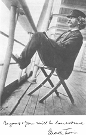

 Twain's notions of race emerge in his texts sometimes as markers of tired racist rhetoric and sometimes as mysterious buoys which surface unexpectedly, leading the reader in new directions. In The Adventures of Huckleberry Finn, published first in 1884, we witness the evolution of a delicate friendship between Huckleberry Finn, a young boy, and the runaway slave, Jim. Throughout the course of the narrative, Huck struggles with complicated questions about slavery and his duty to turn Jim into the proper authorities. In an especially poignant moment, Huck resolves not to turn Jim in, but believes himself damned to hell for his decision. As sympathetic readers, we recognize the socialization process by which Huck is indoctrinated into the racist assumptions of slavery, and applaud his elementary efforts at subverting the status quo. Twain has navigates difficult scenarios while managing to subtly probe at the intricacies of slavery while still retaining an endearing Southern landscape and culture.
Unfortunately, Twain seldom takes up his pen to probe racist sentiments underlying American policy and feelings towards Native Americans. Instead, he inscribes a scenario of degeneration and innate savageness that he attributes as inherent to all Native Americans (albeit under the cover of deconstructing the harmful idealization of American Indians in literature). It is not until his 1897 travel book, Following the Equator, that Twain begins to evince a sympathetic tone toward American Indians and different aboriginal groups around the world. However, this tone is largely ambivalent, and is always tinged with a fatalistic note that reminds the reader that all aboriginals are destined to pass away as the Darwinian advance of civilization routes them out.
Each of the following sites contains a discussion of the text and usually an excerpt of the work.
| The Noble Red Man (1870) | Roughing It (1872) |
| Injun Joe in The Adventures of Tom Sawyer (1876) | Huck and Tom Among the Indians (approx. 1884) |
| Fenimore Cooper's Literary Offenses (1895) | Following the Equator (1897) |